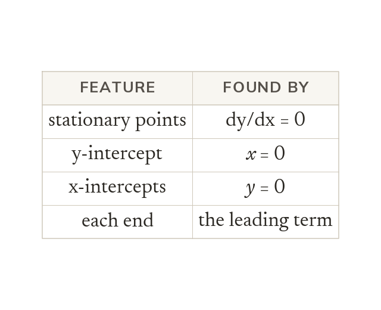
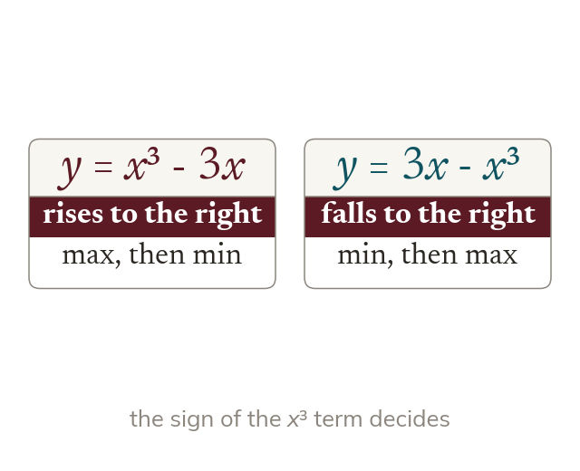
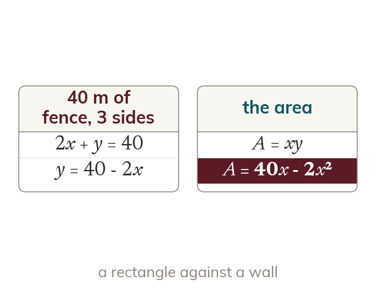
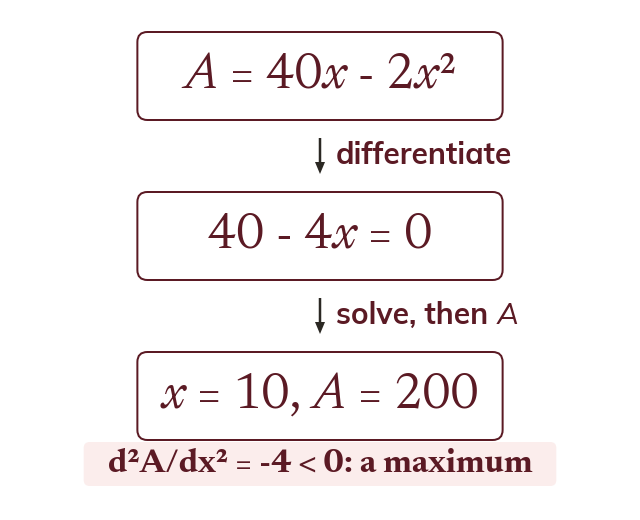

What a sketch needs
A sketch needs the stationary points and the axis intercepts. The leading term fixes how each end goes.
Stationary points and intercepts are enough to sketch a curve. The same calculus finds the largest area or volume a fixed amount of material can give, which is where the course has been heading.
Work down the page at your own pace. Write every answer in your book first, then click to check it.
Read each card, then follow the worked examples one step at a time.

A sketch needs the stationary points and the axis intercepts. The leading term fixes how each end goes.

A positive term means the curve rises to the right. A negative one means it falls to the right.
Pick an answer. If it's wrong, the feedback tells you which mistake it was.
Section Stationary points : the questions that find and classify the stationary points and then sketch the curve, including the quartic.
Read each card, then follow the worked examples one step at a time.

The quantity is written in terms of one variable first. A constraint, such as a fixed total, removes the other.

Setting dA/dx gives the best The second derivative confirms it is a maximum.
Pick an answer. If it's wrong, the feedback tells you which mistake it was.
Section Stationary points : the optimisation problems, from the fixed-sum products and squares to the open box and the minimum-material box.
Log in, then search for a code to practise that skill.